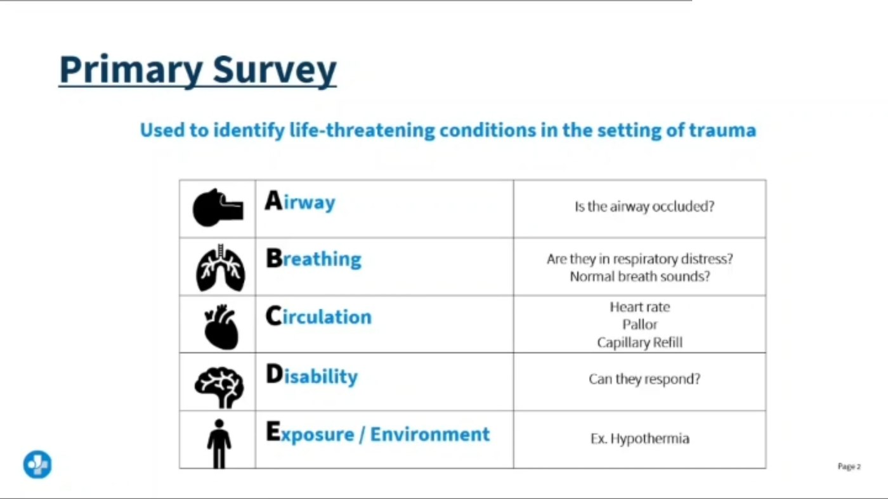
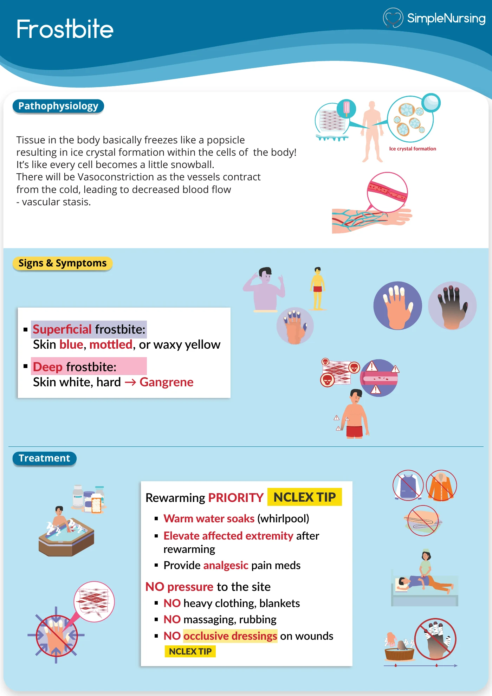

Emergency and Disaster Nursing — Completed
129 slides: all 101 original lecture slides plus 28 answer and clarification slides. Includes the pancreatitis, GI bleeding, and hyperkalemia cases.
Exam 5 · Week 12 · Standalone study page
M12 · Disaster, Mass Casualty & Emergency Nursing
This page keeps all of the original course information, while reducing the decision to one module: triage, emergency action and disaster safety.
NUR 258 · MODULE 12 · PLAY & PRACTICE
🚑 Disaster Triage Desk
24 matching prompts, 5 case questions and 4 visual exercises. Four pairs at a time, with saved practice.
Play this module →Module 12 · Content review
Complete the topic review
Use these focused lessons with the detailed condition notes below.
Legal scope, safety and sentinel events
The applicable state/territory Nurse Practice Act and board rules define nursing scope; competence, role, delegation rules and employer policy further constrain an assignment. A disaster does not automatically authorize unfamiliar invasive care or waive licensure rules. Identify formal emergency orders/waivers, use the incident command chain and request qualified supervision or a safe reassignment. Emergency duties also include timely screening/stabilization under applicable law, consent/capacity assessment, privacy, accurate contemporaneous documentation and required reporting. A sentinel event is a serious patient-safety event meeting Joint Commission criteria, including death, permanent harm or severe harm; certain listed events qualify regardless of outcome. Stabilize the patient, preserve facts, notify through the safety process and participate in systems analysis rather than concealment or blame.
Sources: NCSBN Nurse Practice Acts guide · Joint Commission sentinel events; Brunner & Suddarth and the supplied ATI adult medical-surgical/nutrition texts, reconciled with the current guidance linked here.
Primary survey, multisystem trauma and abdominal injury
Use the trauma team’s current survey protocol: control catastrophic external hemorrhage promptly, protect the cervical spine when indicated, assess airway, breathing, circulation, neurologic disability and full exposure with warming. Treat threats as identified and repeat the survey after every deterioration or intervention. The secondary survey adds mechanism, allergies/medications/history and head-to-toe assessment once immediate threats are addressed. Abdominal bleeding can be occult: trend perfusion, mental status, abdominal findings, urine output and serial labs; a normal initial hemoglobin does not exclude acute hemorrhage. FAST/CT or operative evaluation depends on stability and mechanism. Keep the patient NPO, secure access, prepare blood products/procedures and do not remove an impaled object; support it in place.
Brunner & Suddarth and the supplied ATI adult medical-surgical/nutrition texts, reconciled with the current guidance linked here.
Wound assessment, cleaning and closure
Assess mechanism/time, contamination, foreign body, tissue viability, neurovascular/tendon function and tetanus history; control bleeding and provide analgesia. Irrigate with appropriate fluid and remove foreign material/debride devitalized tissue as ordered. Primary closure approximates a suitably clean, viable wound promptly after evaluation; delayed primary closure leaves a contaminated/high-risk wound open initially for cleaning and reassessment, then closes it when infection is absent and conditions permit. Secondary intention is healing without later primary closure. Nursing care includes dressing/protection, pain management, infection surveillance and follow-up instructions; closure decisions are not based on a single universal hour cutoff.
Brunner & Suddarth and the supplied ATI adult medical-surgical/nutrition texts, reconciled with the current guidance linked here.
Tetanus prophylaxis
With a completed primary series, give a booster at 10 years for clean minor wounds or 5 years for dirty/major wounds; no booster is needed if the last dose was under 5 years. Unknown/incomplete vaccination requires vaccination for any wound. Tetanus immune globulin is never indicated for a clean minor wound and is used for selected dirty/major wounds, including unknown/incomplete history or severe immunodeficiency. Clean/debride the wound; antibiotics are not tetanus prophylaxis.
Sources: CDC tetanus wound prophylaxis; Brunner & Suddarth and the supplied ATI adult medical-surgical/nutrition texts, reconciled with the current guidance linked here.
Crush injury and chest-tube priorities
Crush injury can release potassium and myoglobin, causing dysrhythmias, shock, compartment syndrome and acute kidney injury. Coordinate safe extrication and begin resuscitation early when feasible rather than waiting for release; monitor ECG, potassium, renal function, urine, CK and limb neurovascular status. Treat hyperkalemia/compartment syndrome urgently through the trauma team. For a chest tube, assess the patient before the device, keep drainage below chest level and maintain a closed unobstructed system. Intermittent water-seal bubbling can occur as air evacuates; persistent bubbling suggests a leak requiring systematic assessment. Sudden respiratory distress, disconnection or dislodgement needs immediate assistance and the facility’s emergency protocol; do not routinely clamp a bubbling tube.
Brunner & Suddarth and the supplied ATI adult medical-surgical/nutrition texts, reconciled with the current guidance linked here.
Food poisoning
Ask what and when the patient ate, who else is ill, travel/exposure history, stool/vomit features and neurologic symptoms. Most presentations involve vomiting, diarrhea and cramps, but dehydration, bloody stool, high fever or high-risk hosts need further evaluation. Prioritize hydration/electrolytes, renal status and ordered stool/blood tests; use oral rehydration when tolerated and IV fluid when needed. Antibiotics and antidiarrheals are organism- and patient-specific, not routine for every illness. Diplopia, dysphagia, descending weakness or respiratory difficulty after food exposure raises concern for botulism and requires urgent airway/public-health/antitoxin evaluation. Teach hand hygiene, food safety and return precautions; report suspected clusters through the local public-health process.
Brunner & Suddarth and the supplied ATI adult medical-surgical/nutrition texts, reconciled with the current guidance linked here.
Sexual assault, trafficking and psychiatric emergencies
Provide private, trauma-informed care and address urgent injuries first. Obtain consent separately for examination, evidence collection and treatment; explain options and preserve forensic evidence/chain of custody when chosen, without making treatment conditional on a police report. Offer specialist forensic care, pregnancy/STI/HIV risk evaluation and time-sensitive prevention, advocacy and follow-up. For suspected trafficking, speak privately with a qualified interpreter, assess immediate safety without confronting a suspected trafficker and follow applicable age/safety/reporting requirements. For agitation or suicidality, assess medical causes, intoxication and immediate danger; use calm de-escalation and the least restrictive safe intervention. Ask directly about suicidal thoughts, intent, plan and access to means; institute indicated observation and environmental precautions, stay with an imminently unsafe patient, obtain urgent behavioral-health help and complete a direct handoff.
Brunner & Suddarth and the supplied ATI adult medical-surgical/nutrition texts, reconciled with the current guidance linked here.
Disaster ethics and allocation
Disaster allocation balances benefit, fairness, proportionality and available resources. Apply the approved triage/resource-allocation framework consistently; do not rank people by social worth or make unsupported bedside exclusions. Use incident command/ethics consultation for conflicts, document reasons and reassess as resources change. Expectant classification still requires comfort, dignity and reassessment. Nurses also face duty-to-care, personal/family safety and role-boundary conflicts; advance planning, appropriate PPE and a clear escalation process make these decisions safer.
Sources: HHS CHEMM SALT mass-casualty triage; Brunner & Suddarth and the supplied ATI adult medical-surgical/nutrition texts, reconciled with the current guidance linked here.
Outbreak, epidemic, pandemic and natural disasters
An outbreak or epidemic is disease occurrence above what is expected in a population; outbreak often describes a more localized event. A pandemic describes spread across countries/continents, not a guarantee of greater severity. Nursing actions are early recognition of unusual clusters, exposure history, prompt infection prevention, appropriate specimens, reporting and clear risk communication. Natural-disaster planning anticipates injury, unsafe water, displacement, medication interruption, extremes of temperature and access barriers; plan power-dependent equipment, dialysis/oxygen needs, shelter accessibility and family reunification. Use facility incident command and local public-health direction. ASPR manages the Strategic National Stockpile; CDC provides public-health expertise and surveillance support.
Sources: CDC principles of epidemiology: outbreak, epidemic, pandemic · ASPR Center for the Strategic National Stockpile; Brunner & Suddarth and the supplied ATI adult medical-surgical/nutrition texts, reconciled with the current guidance linked here.
Vesicants
Vesicants damage skin, eyes and respiratory mucosa. Sulfur mustard may cause delayed erythema, blisters and eye/airway injury; absence of immediate pain does not exclude exposure. Lewisite can cause immediate pain and systemic arsenic toxicity. Protect rescuers, remove contaminated clothing and follow agent-specific decontamination without vigorous rubbing; prevent hypothermia. Irrigate exposed eyes and provide airway, burn, pain and fluid support as indicated. Sulfur mustard has no specific antidote; lewisite treatment requires specialist toxicology guidance. Phosgene is a pulmonary agent and is different from phosgene oxime.
Sources: CDC sulfur mustard · CDC/NIOSH mustard-lewisite emergency response; Brunner & Suddarth and the supplied ATI adult medical-surgical/nutrition texts, reconciled with the current guidance linked here.
Decontamination purpose and process
Decontamination removes the agent, limits continuing injury and prevents contamination of staff, equipment and the facility. Use controlled hot/warm/cold zones, hazard-appropriate PPE and trained personnel. Remove/bag contaminated clothing; choose dry removal or water-based decontamination according to the agent and exposure, protecting privacy, wounds, eyes and temperature. Prevent contaminated runoff and uncontrolled entry to clean areas. Airway support, major bleeding control and indicated antidotes may need to occur alongside decontamination with suitable responder protection; do not delay all lifesaving treatment until washing is finished.
Sources: HHS CHEMM SALT mass-casualty triage · CDC sulfur mustard; Brunner & Suddarth and the supplied ATI adult medical-surgical/nutrition texts, reconciled with the current guidance linked here.
▸M12Disaster, Mass Casualty & Emergency NursingWeek 12
💡 The one idea
Disaster triage inverts everyday nursing. Normally the sickest patient goes first. In a mass casualty you do the greatest good for the greatest number — so the most critically injured may be passed over.
| Tag | Means | Examples |
|---|---|---|
| 🔴 RED | Immediate — life-threatening but survivable with quick care | Airway obstruction, tension pneumothorax, severe controllable bleeding |
| 🟡 YELLOW | Use the adopted disaster-triage algorithm and current resources, not fixed diagnoses or promised waiting times. Perform designated rapid lifesaving interventions and reassess. SALT separates dead from expectant; expectant patients still receive comfort care and may be reclassified. Everyday emergency triage follows a different system.Original course wordingEarlier study notes, retained for comparison with the guidance above. These notes may reflect a book edition or lecture convention; check the assigned source for exam wording. A patient in cardiac arrest during a mass casualty event is tagged black , not red. Resuscitating one person consumes the staff and time that could save several. | Open fractures, stable abdominal injury |
| 🟢 GREEN | Minimal — “walking wounded” | Minor cuts, sprains; can often help others |
| ⚫ BLACK | Expectant — dead, or injuries incompatible with survival | Use the adopted disaster-triage algorithm and current resources, not fixed diagnoses or promised waiting times. Perform designated rapid lifesaving interventions and reassess. SALT separates dead from expectant; expectant patients still receive comfort care and may be reclassified. Everyday emergency triage follows a different system.Original course wordingEarlier study notes, retained for comparison with the guidance above. These notes may reflect a book edition or lecture convention; check the assigned source for exam wording. Under 60 seconds per casualty. Airway, breathing, circulation and mental status, then tag and move on. Tag colors: red = immediate , life-threatening but survivable with quick intervention; yellow = delayed , can wait 30 to 60 minutes; green = minimal , the walking wounded; black = expectant , injuries incompatible with survival given available resources. In a mass casualty event a client in cardiac arrest is tagged black — resuscitating one uses the people and time that would save several others. Re-triage continually; casualties change category in both directions. |
Original course diagram and current triage reference
The original diagram is retained for course comparison. Its loudness shortcut and omitted airway-response branch differ from the current assessment sequence shown above.
🚨 The counter-intuitive rule
Use the adopted disaster-triage algorithm and current resources, not fixed diagnoses or promised waiting times. Perform designated rapid lifesaving interventions and reassess. SALT separates dead from expectant; expectant patients still receive comfort care and may be reclassified. Everyday emergency triage follows a different system.
This is the opposite of everyday practice, and that is exactly why it is tested.
🛡️ Who gets discharged to make beds
When a disaster is announced, the patients discharged first are the most stable — typically those already awaiting discharge, day-surgery patients, and stable chronic patients.
✅ Decontamination order
You are no use to anyone as a second casualty. Scene safety and your own PPE come before patient contact - every time.

⭐ High-yield — what the exam actually asks
Show 5 moreHide these 5
- Triage tags — RED: life-threatening but survivable with quick intervention. YELLOW: delayed (open or closed fractures, deep lacerations). GREEN: walking wounded. BLACK: expectant or deceased (agonal breathing, exposed brain matter, uncontrolled arterial bleed with major loss). An open fracture is yellow. A controllable arterial bleed is red; an uncontrolled one in an unresponsive client is black.
- Three-tier system: emergent, urgent (treat within
2 hr), non-urgent. ESI runs Level 1 (most urgent) to Level 5. - Sequence is triage → primary survey → secondary survey. Never leave the primary survey until she is stable.
- ABCDE: Airway with C-spine protection, Breathing, Circulation (control hemorrhage now), Disability (GCS/pupils), Exposure (undress fully, then prevent hypothermia). Brain death occurs within
3–5 minwithout an airway. - Secondary survey is head-to-toe after stabilization and includes AMPLE: Allergies, Medications, Past history, Last meal, Events.
Show 5 moreHide these 5
- Tension pneumothorax is diagnosed by assessment — deviated trachea, absent breath sounds, unequal chest rise. Needle decompression first, then chest tube. Do not wait for imaging. Picture it →
- Chest tubes: tidaling is expected; water-seal bubbling means an air leak; never clamp during transport; keep the system below chest level. Disconnected → sterile water seal. Pulled out → occlusive dressing taped on three sides.
- Coordinate early resuscitation before extrication when feasible and continue after release; monitor potassium/ECG, renal function, urine and compartment findings. Do not make release a prerequisite to supportive care.
Original course wording
Earlier study notes, retained for comparison with the guidance above. These notes may reflect a book edition or lecture convention; check the assigned source for exam wording.
Intra-abdominal injury: rigid distended abdomen, guarding, Kehr's sign (referred shoulder pain = splenic injury). Crush injury : myoglobin causes AKI — aggressive fluids once the force is released. Tetanus prophylaxis if the last dose was 5–10 years ago.
- Heat stroke: core
>104°Fwith altered mental status → rapid cooling plus IV fluids. Hypothermia: core<95°F→ handle gently, a cold heart is irritable. Frostbite: warm (not hot) water immersion, never rub, never rewarm if refreezing is possible. - Call the poison center/toxicology service and treat the actual agent/exposure. Charcoal is useful only for selected ingestions with an adequately protected airway; many agents are not bound. Gastric lavage has very limited specialist-directed indications and is not routine treatment based only on time.
Original course wording
Earlier study notes, retained for comparison with the guidance above. These notes may reflect a book edition or lecture convention; check the assigned source for exam wording.
Activated charcoal works for medications within 1–2 hours . Not for corrosives or hydrocarbons, and not without a protected airway.
Show 5 moreHide these 5
- Give thiamine when indicated, but do not delay glucose for hypoglycemia; the two can be given concurrently or in either order.
Original course wording
Earlier study notes, retained for comparison with the guidance above. These notes may reflect a book edition or lecture convention; check the assigned source for exam wording.
Antidotes : naloxone for opioids (watch for re-sedation), N-acetylcysteine for acetaminophen, flumazenil for benzos (can precipitate seizures), vitamin K for warfarin, protamine sulfate for heparin. Alcohol intoxication: airway and side-lying, and thiamine before glucose in chronic drinkers.
- Arrange immediate medical evaluation and poison/toxicology guidance. Give antivenom promptly when indicated; do not wait for a 4–12-hour window. Keep the patient calm and limb comfortably positioned, remove constricting items, and avoid cutting, suction, ice and tourniquets. Steroids/heparin are not routine snakebite treatment after an arbitrary delay.
Original course wording
Earlier study notes, retained for comparison with the guidance above. These notes may reflect a book edition or lecture convention; check the assigned source for exam wording.
Snakebite : keep her still, limb at or below heart level, remove jewelry. No ice, tourniquet, cutting, heparin or steroids in the first 6–8 hours . Antivenom within 4–12 hr . Assess edema q15–30 min .
- Sexual assault: safety and consent at every step, SANE examiner, preserve evidence but never delay care. Human trafficking red flag: a companion who will not leave the room or answers for her — interview alone with a professional interpreter.
- Psychiatric emergency: de-escalate first; restraints are a last resort requiring an order and frequent reassessment. The ED is the #1 setting for staff abuse — document everything.
- ASPR manages the Strategic National Stockpile; requests flow through the designated emergency/public-health coordination process.
Original course wording
Earlier study notes, retained for comparison with the guidance above. These notes may reflect a book edition or lecture convention; check the assigned source for exam wording.
Agencies: FEMA coordinates federal response; CDC handles surveillance and the Strategic National Stockpile; OSHA sets PPE standards; The Joint Commission requires an emergency operations plan; HICS is the hospital chain of command. Follow your assigned task only.
Show 2 moreHide these 2
- Routine care uses standard precautions; add contact precautions for uncontained cutaneous-lesion drainage. Decontaminate external powder contamination using the incident protocol. Distinguish infection-control precautions from exposure decontamination.
Original course wording
Earlier study notes, retained for comparison with the guidance above. These notes may reflect a book edition or lecture convention; check the assigned source for exam wording.
Anthrax is bacterial and NOT person-to-person — no isolation. Cutaneous, inhalation and ingestion routes; ciprofloxacin or penicillin. Smallpox (airborne) and plague (droplet) ARE transmissible. Nerve agents: decontaminate with soap and water or saline for ≥20 min — blot, do not wipe . Inhaled toxic chemicals cause pulmonary edema → intubate, not a chest tube.
- Use appropriate responder protection and controlled decontamination while providing necessary immediate airway, hemorrhage and antidote interventions. Agent, dose and route determine the decontamination method.
Original course wording
Earlier study notes, retained for comparison with the guidance above. These notes may reflect a book edition or lecture convention; check the assigned source for exam wording.
Decontamination : remove all clothing and jewelry first (that alone removes most contamination), then copious head-to-toe irrigation, in a dedicated decon zone before entering the treatment area. Contain the runoff.
🎧 From the exam-prep recording
What the faculty actually said in the review session for this week — their numbers, their worked calculations, their priority rulings. On an exam, this beats the textbook.
Show 3 moreHide these 3
- Anthrax: IV ciprofloxacin. With hypotension and distress the first action is large-bore access and rapid isotonic fluids.
- Carbon monoxide: the SpO2 is worthless. It reads 98% on room air while she is poisoned, because the probe cannot tell oxyhemoglobin from carboxyhemoglobin. You need a blood carboxyhemoglobin level. Treatment is 100% oxygen by non-rebreather. Symptoms are mostly neurologic — headache and dizziness first.
- Nerve agent / cholinergic crisis — copious secretions, twitching, respiratory distress: atropine + pralidoxime + benzodiazepines for seizure risk, plus soap-and-water decontamination. Avoid plastic airway equipment, because plastic absorbs the agent.
Show 5 moreHide these 5
- Frostbite is graded like burns. Clear blisters = second degree → rewarm in a water bath around
105–106°F, opioids for pain. Tetanus boosters every 10 years — but every 5 years if there is an open wound. - Disaster triage vs everyday ESI: in ESI, level 1 (the sickest) goes first. In mass casualty that same person may be black-tagged. You are hunting the red tag, not the black one.
- Their field cutoffs: RR under 10 or over 30 is abnormal (10–29 acceptable) · cap refill over 2 seconds or pulse over 120 = red. No blood pressures — there is no time.
- Their worked tag assignments: unconscious, RR 8, no pulse → black · walking wounded → green · RR 30 + cap refill >2 s + cannot follow commands → red · open femur fracture with stable vitals → yellow · chest burns with hoarseness and stridor → red · massive head trauma with agonal respirations → black · superficial forearm burn, alert → green.
- Call the poison center/toxicology service and treat the actual agent/exposure. Charcoal is useful only for selected ingestions with an adequately protected airway; many agents are not bound. Gastric lavage has very limited specialist-directed indications and is not routine treatment based only on time.
Original course wording
Earlier study notes, retained for comparison with the guidance above. These notes may reflect a book edition or lecture convention; check the assigned source for exam wording.
Ingestion matrix : corrosive → endoscopy , no charcoal and no lavage · non-corrosive within 45 min → activated charcoal (the stomach empties in about 2 hours ) · 3 hours out with stable vitals → supportive care only · known antidote → give the antidote. We never induce vomiting.
Show 3 moreHide these 3
- Trauma with BP 60/palp and HR 144: two large-bore 18-gauge IVs and fluids. Not CT, not an NG tube.
- Suicide attempt: constant observation, remove hazards, talk to her without family present, ask about suicide directly — the old “don’t say the word” belief is out — and crisis intervention now. They described a nurse who stayed with a client for ten hours outside the room: constant observation means constant. Individual therapy is not appropriate until the crisis is stabilized.
- Calc: oxacillin 375 mg from 250 mg/1.5 mL =
2.3 mL. Their sanity check: "I'm giving more than I have, so my volume must exceed 1.5 mL."
Show 4 moreHide these 4
- Glasgow Coma Scale runs 3 to 15 — it never starts at zero. 15 is alert and oriented. 8 or less means she is not protecting her airway: intubate. “GCS of 8, intubate” is the phrase to hold on to.
- The direction matters more than the number. A GCS climbing from 10 to 14 is what you want. A falling GCS is the emergency, whatever the starting value.
- Evisceration: cover the exposed bowel with sterile saline-moistened gauze, position supine with the knees flexed to take tension off the abdomen, nothing by mouth. Never dry gauze, never open to air, never push the bowel back in. If the vital signs are unstable, resuscitation still outranks the dressing.
- Arrange immediate medical evaluation and poison/toxicology guidance. Give antivenom promptly when indicated; do not wait for a 4–12-hour window. Keep the patient calm and limb comfortably positioned, remove constricting items, and avoid cutting, suction, ice and tourniquets. Steroids/heparin are not routine snakebite treatment after an arbitrary delay.
Original course wording
Earlier study notes, retained for comparison with the guidance above. These notes may reflect a book edition or lecture convention; check the assigned source for exam wording.
Snake bite, what is contraindicated: a tourniquet, ice, cutting and sucking the wound, and alcohol. Keep the limb below heart level , immobilize it, remove rings and watches early, mark the leading edge of the swelling with the time , and give antivenom within 4 to 12 hours if indicated.
Show 5 moreHide these 5
- Triage rule: unstable vital signs beat everything else on the list. If any option mentions resuscitation, that is the priority.
- Put yourself in the room. Their repeated advice: picture the scene before reading the options. You would not walk to the cupboard for supplies before covering an open abdomen, and you would not call the provider before doing what you can.
- Cutaneous anthrax — they flagged the image as one worth recognizing, because it changed a real patient’s management on their unit.
- Use appropriate responder protection and controlled decontamination while providing necessary immediate airway, hemorrhage and antidote interventions. Agent, dose and route determine the decontamination method.
Original course wording
Earlier study notes, retained for comparison with the guidance above. These notes may reflect a book edition or lecture convention; check the assigned source for exam wording.
Radiation, chemical and biological exposure: decontaminate before the patient enters the department, and protect the staff first — you are no use to anyone contaminated.
- In any mass casualty question, the resource is the constraint. The answer is what saves the most people with what is actually available, not what is best for one person.
⚠️ Exam traps
- Disaster triage optimizes for the greatest good for the greatest number — which can mean not treating the sickest client.
- Yellow vs green hinges on wound depth and mobility, not on which injury sounds worse.
- Routine care uses standard precautions; add contact precautions for uncontained cutaneous-lesion drainage. Decontaminate external powder contamination using the incident protocol. Distinguish infection-control precautions from exposure decontamination.
⚠️ What it turns into — the complication for each one
The disorder cards below run definition, causes, signs, diagnostics, management and nursing. This is the part they do not have, and it is where the exam lives: so what happens if this is missed or left? Here the complication is often a system failing rather than a body failing — and the responder becoming a casualty is a real one.
| Disorder | What it turns into |
|---|---|
| Triage and mass casualty response | Over-triage floods the resources and under-triage kills the salvageable. Staff injury, and the moral distress of leaving expectant clients — which is the right decision and still causes harm to the nurse making it |
| Bioterrorism agents | Mass casualties, secondary contamination of the responders and the department, delayed recognition because the first cases look ordinary, and public panic outstripping the actual exposure |
| Poisoning and overdose | Aspiration and airway loss, dysrhythmia, seizures, and hepatic failure from acetaminophen — which is silent for the first day. After naloxone, re-sedation once it wears off before the opioid does |
| Environmental emergencies | Heat stroke into rhabdomyolysis, acute kidney injury, DIC and death. Hypothermia into dysrhythmia and afterdrop during rewarming. Frostbite into tissue loss. Drowning into ARDS hours later. Anaphylaxis from stings |
| Emergency preparedness and the nurse's role | Communication breakdown, supplies and staff not where they were assumed to be, and nurses unable to come in because their own families are affected |
🚑 Disaster and emergency nursing, section by section
Triage first, because the rules invert in a mass casualty event, then the agents, poisons and environmental emergencies, then your own role in the plan. Same six sections every time.
Triage and Mass Casualty ResponseThe rules invertOpenClose
Definition and Overview
Sorting clients so that limited resources do the most good. Everyday emergency department triage treats the sickest person first. Mass casualty triage does the opposite: it treats those most likely to survive with the resources available, and gives comfort care only to those who will not. That inversion — from 'sickest first' to 'greatest good for the greatest number' — is the single most tested idea in this module.
Causes and Risk Factors
A mass casualty incident is any event where the casualties overwhelm what is available: natural disasters, transport crashes, fires, explosions, shootings, industrial accidents, chemical release, and pandemics. What makes an event a disaster is the mismatch between need and resources, not the raw number of casualties.
Clinical Manifestations
In everyday emergent (red) triage: airway compromise, respiratory distress, chest pain with cardiac features, active hemorrhage, altered consciousness, stroke symptoms, unstable vital signs. Urgent (yellow): severe pain, open fractures, moderate bleeding, high fever. Non-urgent (green): sprains, minor wounds, chronic complaints. In mass casualty START triage the assessment is deliberately crude and fast: can they walk (green); respiratory rate over 30; capillary refill over 2 seconds or absent radial pulse; can they follow a simple command.
Assessment and Diagnostic Findings
Use the adopted disaster-triage algorithm and current resources, not fixed diagnoses or promised waiting times. Perform designated rapid lifesaving interventions and reassess. SALT separates dead from expectant; expectant patients still receive comfort care and may be reclassified. Everyday emergency triage follows a different system.
Medical Management
Incident command activates the facility's emergency operations plan. Decontamination before entry where indicated. Surge capacity: discharge or transfer stable inpatients, cancel elective surgery, open alternative care areas, call in staff. Definitive care follows priority order. Family reunification and behavioral health support are part of the plan, not an afterthought.
Nursing Management and Client Education
Know where your facility's disaster plan is and what your role in it is before the day it is needed. Tag, document briefly, and keep moving — the commonest failure is a nurse stopping to give full care to the first casualty they meet. Reassess the yellow and green groups regularly. Delegate within scope: the walking wounded can be put to work holding pressure and comforting others. Expect and plan for the psychological toll on staff — debriefing and critical incident stress support are standard care, not weakness. Teach families about personal preparedness: a kit with water, food, medications, copies of prescriptions and documents, a plan for meeting, and an out-of-area contact.
Bioterrorism AgentsOpenClose
Definition and Overview
Deliberate release of biological agents to cause harm. The Category A agents are the priority ones — easily disseminated or transmitted person to person, high mortality, and capable of causing public panic: anthrax, smallpox, plague, botulism, tularaemia and the viral hemorrhagic fevers. Recognizing an outbreak early is a nursing function, because nurses see the first cases.
Causes and Risk Factors
Deliberate release through air, water, food or mail. Suspect it when there is a cluster of unusual illness — the wrong disease, in the wrong season, in the wrong population, in unexpected numbers, or a disease not seen in the area at all. Health care workers, first responders and laboratory staff are at particular risk.
Clinical Manifestations
Inhalational anthrax: flu-like illness for a few days, then abrupt severe respiratory distress and shock, with a widened mediastinum on chest x-ray. Not spread person to person. Smallpox: high fever and prostration, then a rash that starts on the face and limbs and spreads inward, with all lesions at the same stage — that is what distinguishes it from chickenpox, where lesions are at different stages and start centrally. Pneumonic plague: abrupt fever, cough, hemoptysis, rapid respiratory failure. Botulism: descending symmetrical flaccid paralysis with double vision, drooping lids, slurred speech and difficulty swallowing, and a fully alert client with no fever.
Assessment and Diagnostic Findings
Report a suspected case to the health department immediately — notification is part of the assessment, not something that happens later. Cultures and specific testing through public health laboratories; chest x-ray; and a careful exposure history including travel, occupation, mail and contacts. Continuous respiratory and neurological assessment, since these agents kill through the airway.
Medical Management
Anthrax: ciprofloxacin or doxycycline, for treatment and for post-exposure prophylaxis of contacts. Smallpox: vaccination within 4 days of exposure can prevent or lessen disease; supportive care otherwise. Plague: streptomycin, gentamicin or doxycycline, with prophylaxis for close contacts. Botulism: antitoxin, which stops progression but does not reverse existing paralysis, plus ventilatory support that may last weeks.
Nursing Management and Client Education
Match the precautions to the agent and get them on before the diagnosis is confirmed. Smallpox and viral hemorrhagic fevers need airborne and contact precautions; pneumonic plague needs droplet precautions; anthrax and botulism need standard precautions, because neither spreads person to person. Decontaminate before the client enters the department where there is a powder or liquid exposure: remove clothing (which removes most of the contamination), bag it as evidence, and shower with soap and water. Wear appropriate protective equipment and do not improvise it. Do not enter a contaminated area without training and protection — a contaminated rescuer becomes a second casualty and contaminates the department. Support clients through the isolation and the fear, and teach that prophylactic antibiotics must be completed in full — for anthrax, that is 60 days.
Poisoning and OverdoseOpenClose
Definition and Overview
Injury from a substance taken by mouth, inhaled, injected or absorbed, whether accidentally or deliberately. The immediate work is support the airway, breathing and circulation; identify the substance; limit further absorption; and give an antidote if one exists — and most poisons have no antidote, so supportive care is the treatment.
Causes and Risk Factors
In children, unsecured household products and medicines. In adolescents and adults, deliberate self-harm and recreational drug use. In older adults, therapeutic error — a duplicate dose, a confused regimen, or a drug interaction. Also carbon monoxide from faulty heating, occupational chemical exposure, plants and mushrooms, and alcohol.
Clinical Manifestations
Depends entirely on the agent, so learn the patterns. Opioids: pinpoint pupils, respiratory depression, coma. Anticholinergics: hot, dry, flushed, dilated pupils, confused, retention — 'mad as a hatter, dry as a bone'. Cholinergics or organophosphates: salivation, lacrimation, urination, defecation, GI upset, emesis, plus bradycardia and small pupils. Acetaminophen: nothing much for the first 24 hours, then nausea and right upper quadrant pain, then liver failure — a well-looking client after an overdose is not reassuring. Salicylates: tinnitus, hyperventilation, fever, then mixed acid–base disturbance. Carbon monoxide: headache, nausea, confusion, with a falsely normal pulse oximetry reading.
Assessment and Diagnostic Findings
Call the poison control center — they direct management, and the number belongs in your teaching too. Establish what, how much, when and by what route, and look for the container. Acetaminophen level at 4 hours post-ingestion plotted on the Rumack–Matthew nomogram. Salicylate level, ABGs, electrolytes and anion gap, glucose, creatinine, liver function, ECG, and a carboxyhemoglobin level where relevant. Continuous monitoring of airway, breathing, circulation and level of consciousness.
Medical Management
Support first: airway, oxygen, IV access, glucose, and treat seizures. Limit absorption with activated charcoal, useful within about an hour and only in an alert client with a protected airway; whole-bowel irrigation for some agents; and copious irrigation for skin or eye exposure. Antidotes to know: naloxone for opioids, N-acetylcysteine for acetaminophen, flumazenil for benzodiazepines (used cautiously), atropine and pralidoxime for organophosphates, and 100% oxygen for carbon monoxide. Sodium bicarbonate for salicylates and tricyclics. Hemodialysis for some.
Nursing Management and Client Education
Airway before antidote. Position on the side if the client is drowsy and vomiting. Do not induce vomiting, and do not give syrup of ipecac — it is no longer recommended, and it is dangerous with corrosives and hydrocarbons. Naloxone wears off before most opioids do, so keep monitoring for re-sedation and expect acute withdrawal — agitation, vomiting, pain — when it works. Give N-acetylcysteine even if the client looks well; it is most effective within 8 hours. Save containers and specimens; document precisely, since this may become a legal matter. Every intentional overdose gets a suicide risk assessment, one-to-one observation and a mental health referral — do not treat the poisoning and discharge the person. Teach prevention: the poison control number on the fridge, locked and original containers, safe storage away from food, working carbon monoxide detectors, and a medication review for older adults.
Carbon Monoxide Poisoning
Simple Nursing original handout · saved in your Drive.
Read the full PDF here
Environmental EmergenciesOpenClose
Definition and Overview
Injuries caused by heat, cold, water or animals. They share a pattern: remove the person from the exposure, correct the core problem gradually rather than abruptly, and expect the body to behave badly while you do. Heat and cold emergencies in particular are far more dangerous in the very young, the very old and the chronically ill.
Causes and Risk Factors
Heat: exertion in high heat and humidity, age extremes, obesity, dehydration, alcohol, cardiovascular disease, and drugs that impair sweating — anticholinergics, antihistamines, beta blockers, diuretics and antipsychotics. Cold: homelessness, alcohol, immersion, inadequate clothing, hypothyroidism, immobility and age extremes. Drowning: inability to swim, alcohol, seizures, and unsupervised children near water. Bites and stings: outdoor exposure; known allergy makes a sting an anaphylaxis risk.
Clinical Manifestations
Heat exhaustion: heavy sweating, weakness, nausea, headache, tachycardia, normal or slightly raised temperature and an intact mental state. Heat stroke: core temperature above 104°F (40°C), hot skin that is often dry because sweating has stopped, and altered mental status — confusion, seizures, coma. That change in mental status is what separates heat stroke from heat exhaustion, and it is a true emergency. Hypothermia: shivering that stops as it worsens, slurred speech, clumsiness, confusion, bradycardia and bradypnoea, then rigidity and apparent death. Frostbite: white waxy hard skin, numb at first and intensely painful on rewarming.
Assessment and Diagnostic Findings
Core temperature with a low-reading or esophageal thermometer — an ordinary oral thermometer cannot measure a hypothermic client. Continuous cardiac monitoring, because the cold heart is irritable and prone to ventricular fibrillation. Electrolytes, glucose, creatine kinase for rhabdomyolysis in heat stroke, coagulation studies, ABGs, and hourly urine output. Neurological status throughout.
Medical Management
Heat stroke: cool rapidly — remove clothing, cold water immersion or evaporative cooling with mist and fans, ice packs to the groin, axillae and neck, cooled IV fluids, and stop active cooling around 102°F (39°C) to avoid overshoot. Hypothermia: rewarm gradually — passive external warming for mild cases, active external and then core rewarming with warmed fluids, humidified oxygen and lavage for severe ones. Frostbite: rapid rewarming in circulating water at 98–104°F, analgesia, tetanus prophylaxis, and delayed debridement.
Nursing Management and Client Education
Do not give antipyretics for heat stroke — the hypothalamic set point is normal, so paracetamol and aspirin do nothing and add liver and bleeding risk. Handle a hypothermic client gently: rough movement can trigger ventricular fibrillation. Nobody is dead until they are warm and dead — continue resuscitation through rewarming. For frostbite, never rub or massage the tissue, and never rewarm if there is any chance of refreezing — a thaw–refreeze cycle destroys more tissue than staying frozen. Monitor for compartment syndrome and rhabdomyolysis. Teaching is prevention: hydration and pacing in heat, checking on older neighbours during a heatwave, layered clothing and covered extremities in cold, life jackets and constant supervision around water, and an auto-injector for anyone with a known sting allergy.
Visual references for this topic
 HypothermiaExam 5 · Study page →
HypothermiaExam 5 · Study page →Preview here
 FrostbiteExam 5 · Study page →
FrostbiteExam 5 · Study page →Preview here

Frostbite📄 Simple Nursing · Opens in Drive →Read the full PDF here
 Hypothermia📄 Simple Nursing · Opens in Drive →
Hypothermia📄 Simple Nursing · Opens in Drive →Read the full PDF here
Emergency Preparedness and the Nurse's RoleOpenClose
Definition and Overview
The planning, training and legal framework that lets a facility function when the day comes. It runs in four phases — mitigation, preparedness, response and recovery — and it is organized through the Incident Command System, a defined chain of command with one person in charge and a clear role for everybody else.
Causes and Risk Factors
Every facility is required to have a plan and to exercise it. The things that make a response fail are predictable: staff who do not know their role, communication that breaks down, supplies and surge capacity that were never counted, no plan for staff families, and no provision for the psychological aftermath.
Clinical Manifestations
What a failing response looks like: nobody knows who is in command, staff self-deploy to where they feel useful rather than where they are assigned, documentation stops, families cannot find their people, and staff work past exhaustion without relief. Afterwards, watch for acute stress reactions and post-traumatic stress in staff and clients alike — sleep disturbance, intrusive memories, irritability, withdrawal and guilt.
Assessment and Diagnostic Findings
Know before the event: where the plan is, what your assigned role is, where supplies and personal protective equipment are kept, the evacuation routes, and how communication works when phones and networks fail. During the event, assess continually: casualty numbers and categories, staffing, supplies, bed capacity and safety of the environment. Afterwards, the debrief is an assessment too — what worked and what did not.
Medical Management
Activation of the emergency operations plan and incident command. Surge capacity: early discharge, cancelling elective work, opening alternative sites. Mutual aid agreements between facilities. Under crisis standards of care, the standard shifts explicitly from the individual to the population, and that shift is declared, documented and time-limited — not improvised at the bedside. Recovery includes restoring services, restocking, and reviewing the response formally.
Nursing Management and Client Education
Your role in the plan is something to know now, not to look up during the event. Follow the chain of command and do not self-deploy. Have a personal and family plan — childcare, elder care, pets, transport — because a nurse who cannot leave home safely cannot come to work. Document even briefly; triage tags and times matter afterwards. Delegate within scope and use unlicensed personnel and volunteers deliberately. Take the breaks, eat, drink and accept relief — and hold colleagues to the same, because fatigue causes the errors. Afterwards, attend the debriefing and take critical incident stress support seriously; distress after a disaster is a normal response to an abnormal event, and untreated it ends careers. Teach clients and families household preparedness: an emergency kit, at least a week of medication, copies of prescriptions and documents, a meeting place, and an out-of-area contact who is easier to reach than a local one.
🧠 Mind maps 1
One per disorder, built from the structure of your ATI chapter.
🎯 Who gets it
- Children under
5 yearsold face the highest accidental poisoning risk. - Mid-to-late childhood kids face the highest snakebite risk.
- Vulnerable clients face higher risk of trafficking exploitation.
👀 What you see
- Heatstroke: temperature above
40° C (104° F)with altered mental status. - Heatstroke may show abnormal blood potassium or sodium levels.
- Frostbite severity may not be clear until up to
24 hrafter injury.
🩺 What you do
- Use head-tilt/chin-lift only when no cervical spine injury is suspected.
- Use a modified jaw thrust if trauma is suspected, to protect the spine.
💬 What you teach
- Stay indoors with fans or AC during periods of high heat.
- Limit alcohol and caffeine intake in hot weather.
Read left to right: who gets it → what you see → what confirms it → what you do → what goes wrong. Cover a column and rebuild it out loud.
🎥 Lecture recordings 5
Tap a card to open that recording in Google Drive. The same list lives in the lecture library.
All NUR 258 recordings →🖼️ Triage at a glance 1
There is no separate disaster page on this site yet, so rather than link you to nothing, here is the chart itself.
| Tag | Means | Who |
|---|---|---|
| RED Immediate | Life-threatening but survivable with rapid intervention | Airway obstruction, tension pneumothorax, severe hemorrhage, shock that responds |
| YELLOW Delayed | Serious, but can wait hours | Stable abdominal injury, large fractures, burns without airway involvement |
| GREEN Minimal | The walking wounded | Minor lacerations, sprains, small burns — and they can help |
| BLACK Expectant | Dead, or injuries incompatible with survival given available resources | Massive head injury, full-thickness burns over most of the body, no respirations after airway repositioning |
🚨 This is the part that feels wrong and is right
In everyday nursing the sickest client is seen first. In a mass casualty that reverses: the goal is the greatest good for the greatest number, so the client who would consume enormous resources with little chance of survival is tagged expectant and the salvageable are treated first.
The walking wounded are moved out first — not because they matter least, but because clearing them lets you find everyone else.
Visual references by topic 4
Pictures and original handouts are filed beside their topics. These shortcuts open the right section.
📋 Active Learning Templates 1
One per disorder. Every row is filled from that section of the ATI chapter — print it, cover the right, rebuild it.
📋 Emergency Nursing Principles and Management6 parts
Filled from ATI chapter 3, row by row from that chapter’s own sections — 12 of 12 rows have content.
7 rows came from outside your ATI chapter — 1 cite a source, 6 are built from this page’s own notes. Each one is labeled.
🧭 What it isAlterations in Health (Diagnosis) · Health Promotion & Disease Prevention
Alterations in Health (Diagnosis)
- This chapter covers ED triage systems, the ABCDE primary survey, secondary survey steps, and management of heat/cold injuries, poisoning, overdose, trauma, maltreatment, psychiatric crises, and cardiac emergencies.
Health Promotion & Disease Prevention
From this module — built from the notes above on this page, not a section of the ATI chapter.
- Most emergency presentations are preventable injury — seat belts, helmets, fall prevention, safe firearm and medication storage.
- Teach CPR and bleeding control widely; bystander action decides survival before anyone arrives.
- Community education on stroke and heart attack warning signs and calling early — time is the whole treatment.
- Disaster preparedness at home: water, medicines, a plan, and a meeting point.
- Violence screening and referral, since the emergency department is often the only contact point.
👀 How it shows upAssessment — Risk Factors · Assessment — Expected Findings
Assessment — Risk Factors
- Trauma victims risk hypothermia from exposure, cold oxygen, and cold IV fluids.
- Children under
5 yearsold face the highest accidental poisoning risk. - Mid-to-late childhood kids face the highest snakebite risk.
- Vulnerable clients face higher risk of trafficking exploitation.
- A history of substance misuse raises trafficking vulnerability.
Assessment — Expected Findings
- Hypothermia: shivering, impaired judgment, dysarthria, and drowsiness are common signs.
- Heatstroke: temperature above
40° C (104° F)with altered mental status. - Heatstroke may show abnormal blood potassium or sodium levels.
- Frostbite severity may not be clear until up to
24 hrafter injury. - Full-thickness frostbite shows dark blisters, necrosis, and possible eschar.
- Deep-tissue frostbite can cause gangrene and may require amputation.
- Opioid poisoning: pinpoint pupils, low blood pressure, respiratory depression, and hypoxia.
- Snakebite: pain, nausea, vomiting, numbness, and paresthesia at the site.
🧪 How it is confirmedLaboratory Tests · Diagnostic Procedures
Laboratory Tests
- Point-of-care glucose on every altered mental status — it is fast, reversible, and missed embarrassingly often.
- Type and crossmatch early in trauma; do not wait for the hemoglobin.
- Lactate for occult shock and sepsis; arterial blood gas for ventilation.
- Troponin, electrolytes, renal function, coagulation studies and toxicology as indicated.
- Pregnancy test in any person of childbearing potential before imaging or medication.
Diagnostic Procedures
- Primary survey: A B C D E — airway with cervical spine, breathing, circulation, disability, exposure. Fix each before moving on.
- Secondary survey — head-to-toe, plus a full history.
- Triage sorts by acuity, not arrival. In mass casualty the priority inverts to the greatest good for the greatest number.
- FAST ultrasound for free fluid; imaging directed by mechanism.
- Continuous monitoring — ECG, oximetry, capnography.
🩺 What you doNursing Care · Medications · Therapeutic Procedures
Nursing Care
- Airway comes first; brain injury or death can occur within
3 to 5 minwithout a patent airway. - Use head-tilt/chin-lift only when no cervical spine injury is suspected.
- Use a modified jaw thrust if trauma is suspected, to protect the spine.
- Apply direct pressure for bleeding first; use a tourniquet proximally if that fails.
- Insert large-bore IVs in both antecubital areas unless a limb is injured.
- A GCS under
8means serious brain injury; a full score of15is expected. - AVPU is a quick consciousness check: Alert, Voice, Pain, Unresponsive.
- Contact poison control at
800-222-1222for suspected poisoning. - Gastric lavage is only useful within
1 hrof ingestion.
Medications
- Epinephrine IM for anaphylaxis, first and immediately. Never delay it for an antihistamine or a steroid.
- Naloxone for opioid toxicity; dextrose for hypoglycemia.
- Isotonic fluid for shock; blood products in hemorrhage — and blood, not crystalloid, is the resuscitation fluid for bleeding.
- Tetanus prophylaxis for wounds; analgesia early rather than withheld pending diagnosis.
- Reversal agents: vitamin K and prothrombin complex for warfarin, idarucizumab for dabigatran.
Therapeutic Procedures
Not in your ATI chapter — filled from StatPearls, 2023.
- Triage nurses use the Emergency Severity Index to sort patients into five acuity levels within about a minute.
- Level 1 marks a patient who needs an immediate life-saving intervention such as airway or hemodynamic support.
- Level 2 covers high-risk, confused, or severely distressed patients, or stable patients with markedly abnormal vital signs.
- Levels 3 through 5 are set by how many hospital resources the visit is expected to require.
StatPearls (NCBI Bookshelf) · Emergency Department Triage · open the source →
💬 Around the patientClient Education · Interprofessional Care
Client Education
- Wear lightweight, loose clothing and avoid excess sun to prevent hyperthermia.
- Stay indoors with fans or AC during periods of high heat.
- Limit alcohol and caffeine intake in hot weather.
- Apply sunscreen rated at least
SPF 30before going outside. - Take a cool shower or bath if the client feels overheated.
- For frostbite, rewarm in a warm, not hot, bath to restore circulation.
- Do not rub or massage frostbitten skin, even if it feels numb.
Interprofessional Care
- Trauma team with assigned roles agreed before the patient arrives.
- Pharmacist at the bedside for resuscitation dosing.
- Blood bank and the massive transfusion protocol.
- Social work, chaplaincy and a dedicated family liaison, separate from the resuscitating nurse.
- Forensic and law enforcement where evidence must be preserved — and evidence is never discarded with the clothing.
- Debrief the team afterwards, every time.
⚠️ What goes wrongComplications
Complications
- Missed injury — the reason for the secondary survey and repeated reassessment.
- Airway loss in burns, anaphylaxis and facial trauma; intubate early rather than late.
- Hypothermia in trauma, which worsens coagulopathy and acidosis — the lethal triad.
- Compartment syndrome, which presents as pain out of proportion and pain on passive stretch.
- Medication error under time pressure; wrong-patient error when identification is rushed.
📝 Notes & key concepts
Additional lecture and study notes.
- Evisceration: saline-moistened sterile gauze, supine with knees flexed. Never dry gauze, never reinsert organs, never leave it open to air.
🎯 Module quiz
Questions for this module. They also feed the Mega Quiz.
Nothing here yet — drop it in when you have it